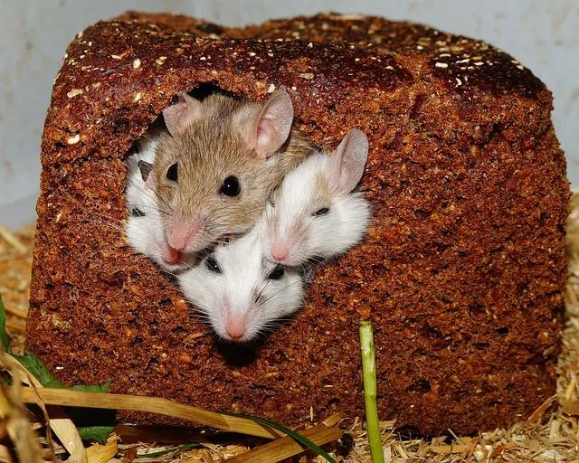

We believe security software like Kicksecure needs to remain Open Source and independent. Would you help sustain and grow the project? Learn more about our 14 year success story and maybe DONATE!
Shrink Virtual HarddiskAdvanced DocumentationTuningPrevious page: Shrink Virtual HarddiskIndex page: Advanced DocumentationNext page: TuningNested Virtualization

It is possible to run Virtual Machines (VMs) inside other VMs. That is called Nested Virtualization.
Introduction
Nested virtualization refers to virtualization that runs inside an already virtualized environment. In other words, it's the ability to run a hypervisor inside of a virtual machine (VM), which itself runs on a hypervisor.
With nested virtualization, you're effectively nesting a hypervisor within a hypervisor. The hypervisor running the main virtual machine is considered a level 0, or LO hypervisor, and the initial hypervisor running inside the virtual machine is referred to as a level 1 or L1 hypervisor. Further nested virtualization would result in a level 2 (L2) hypervisor inside the nested VM, then a level 3 (L3) hypervisor within that nested VM, and so forth.
Not all hypervisors and operating systems support nested virtualization.
Self Support First Policy applies.
Security Considerations
Nested virtualization is not a simple by-product of developing a virtualizer. Nested virtualization is not automatically offered as a feature and this is also true for various third party virtualizers. For example while the VirtualBox virtualizer has existed for years, the ability to run VirtualBox inside VirtualBox using Intel CPUs was only offered as a feature in v6.1 released in 2020. [2] This demonstrates that extra code is required for this functionality and that also implies a greater attack surface.
By mixing virtualizers -- for example by running VirtualBox inside the VMware virtualizer -- the attack surface is increased because the virtualizer code of both products is involved which increases risk of a "break out".
Qubes
Running VirtualBox, KVM or Qubes inside Qubes is difficult and is not offically supported by the Qubes developers; this is unrelated to Kicksecure. To learn more about the current state of support, search the qubes-devel and qubes-users mailing lists for terms such as VirtualBox, KVM and/or nested virtualization.
KVM
See Nested KVM Virtualization.
VirtualBox inside VirtualBox
Host Steps
Perform these steps on the host (L0).
1. Power off the VM (L1) if
running.
2. Change the host key.
VirtualBox→Preferences→Input→Host Key.- The "outside" (
L0) and the "inside" (L1) Host Key must differ, otherwise you can not leave the "inside" (L1) VM anymore.
3. Enable nested virtualization.
VirtualBox→click a VM→Settings→System→Processor→Enable 'Nested VT-x/AMD-V→OK(If that does not work, see footnote.) [3]
4. Assign less virtual CPUs.
For example if the host has 4 physical CPU cores, reduce the VM to 3: [4]
VirtualBox→click a VM→Settings→System→Processor→Reduce to 3→OK
5. Increase virtual RAM.
Virtual machine→Menu→Settings→AdjustMemory slider→Click:OK
6. Using I/O APIC can speed up the VM.
VirtualBox→right-click on VM→Settings→System→check "Enable I/O APIC"→Click:OK[5] [6] [7]
7. Power on the VM (L1).
VM Steps
Perform these steps inside the VM (L1).
1. Install VirtualBox.
Install package(s) virtualbox following these
instructions:
1 Platform specific notice.
- Kicksecure: No special notice.
- Kicksecure-Qubes: In Template.
2 Update the package lists and upgrade the system.
sudo apt update && sudo apt full-upgrade
3
Install the virtualbox package(s).
Using apt command line --no-install-recommends option is in
most cases optional.
sudo apt install --no-install-recommends virtualbox
4 Platform specific notice.
- Kicksecure: No special notice.
- Kicksecure-Qubes: Shut down Template and restart App Qubes based on it as per Qubes Template Modification.
5 Done.
The procedure of installing package(s) virtualbox is
complete.
2. It should now be possible to use VirtualBox
inside the VM (L1).
3. Make CPU core adjustments.
If the VM (L1) has 3 "physical" (actually virtual) CPU
cores do not assign more than 2 virtual CPU cores to VM
(L2). Start with 1 virtual CPU for the VM
(L2). If that performs well, consider experimenting with an
increased number:
VirtualBox→click a VM→Settings→System→Processor→Increase to 2→OK
Footnotes
- https://www.webopedia.com/TERM/N/nested-virtualization.html
- https://www.virtualbox.org/ticket/4032#comment:163
Hardware-assisted Nested virtualization on Intel CPUs has been available starting with VirtualBox 6.1.0
- Replace
Whonix-Workstation-LXQtwith the actual name of the VM, for example if the VM was renamed or multiple Kicksecure are in use. The following command works on Linux. It is untested on Windows but it should be possible to make this command work. Its purpose is adding VBoxManage to PATH (if that is not the default) or using the full path to VBoxManage. VBoxManage modifyvm Whonix-Workstation-LXQt --nested-hw-virt on - https://www.virtualbox.org/ticket/19500
- vboxmanage "Kicksecure" modifyvm --ioapic on
- So does enabling ACPI. Enabling ACPI in all VMs significantly speeds
up the "inside" VM (
L1). vboxmanage "Kicksecure" modifyvm --acpi on Quote VirtualBox manual:ACPI is the current industry standard to allow OSes to recognize hardware, configure motherboards and other devices and manage power. As most computers contain this feature and Windows and Linux support ACPI, it is also enabled by default in Oracle VM VirtualBox.
- These settings are in use for Kicksecure VMs by default.
Categories: Documentation